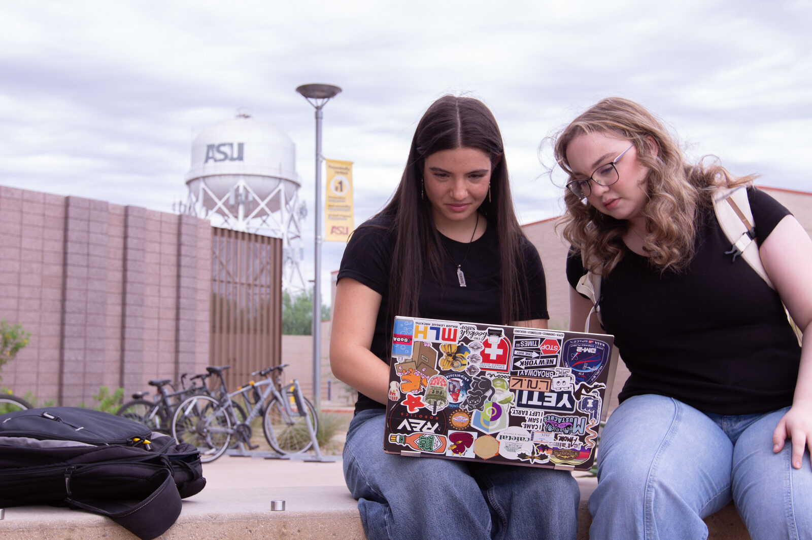

Alumnus
Sameerjeet Singh Chhabra
Studied robotics and autonomous systems at ASU through spring 2026, with PLC automation project work featured on this site's Media page. Now in production engineering at Tesla.
Alumni
The lab's students leave with hands-on robotics and automation experience. This page collects typical salary outcomes for robotics graduates and the people who have moved on from the lab.

Outside ISTB 12, the lab's home on the Polytechnic campus.
Typical early-career pay for engineering graduates in the United States, in US dollars. Robotics and autonomous systems graduates are usually hired into roles across these engineering categories.
| Degree level | Typical starting pay | Source |
|---|---|---|
| Bachelor's (engineering) | $78,731 average starting base salary | NACE Winter 2025 Salary Survey, Class of 2025 projections, national |
| Master's (engineering) | $94,086 average starting base salary | NACE Winter 2025 Salary Survey, Class of 2025 projections, national |
| PhD (engineering) | $115,956 median starting salary (middle 50%: $93,352-$131,000) | NACE 2025 doctoral-degree starting salaries, national |
| Working robotics engineers | $122,930 median annual wage | O*NET OnLine, Robotics Engineers (U.S. Bureau of Labor Statistics wage data, 2025) |
| ASU engineering graduate degrees | $95,000 median full-time salary | Ira A. Fulton Schools of Engineering graduate degree outcomes |
Figures are broad national and university-wide outcomes from 2025 surveys, in US dollars; actual offers vary by role, industry, and location. They are not outcomes tracked for this lab's own students.
Alumnus
Studied robotics and autonomous systems at ASU through spring 2026, with PLC automation project work featured on this site's Media page. Now in production engineering at Tesla.
The lab's PhD researchers are completing their doctoral degrees. They are still active in the lab - their full profiles are on the People page.
PhD candidate
Completing his PhD in Robotics and Autonomous Systems at ASU; develops and teaches the lab's hands-on robotics laboratories.
PhD candidate
Completing his PhD in Robotics and Autonomous Systems at ASU; co-author of the lab's instructional lab guides.